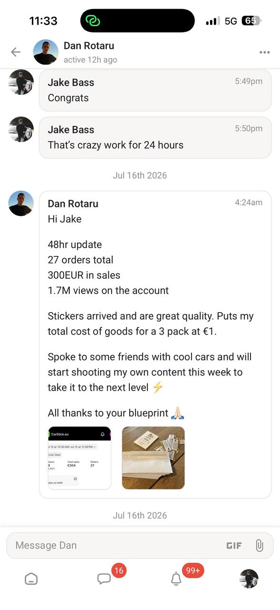
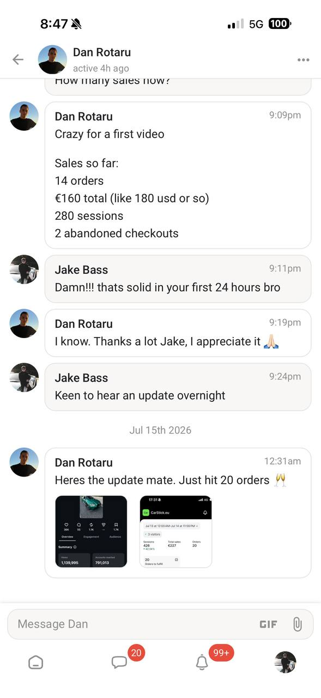

Wins from our students
Real students, real results.
These students all answered the call. They used the exact same information you're about to get access to.






Someone from my team is calling you in the next 5 to 10 minutes to set up your free access. It'll come from a number you don't recognise. That call is the only way you get in - if we can't reach you, your spot goes to the next person on the list.
DO THIS NOW: take your phone off silent and turn Do Not Disturb off.
Most people miss our call because their phone was face-down on Do Not Disturb. Thirty seconds now saves your spot:
iPhone: swipe down from the top-right, tap the moon icon so it goes dark. Android: swipe down, turn off Do Not Disturb.
You'll get a text first, then a call. It'll be an unknown number - that's us, not spam. Pick it up.
The call takes about five minutes. My team confirms a couple of details, then gets you access to the $5,000 course and the community - all free, nothing to pay.
Miss the call and your free slot is gone. We only hold spots for the people we can actually get on the phone.
Keep this page open and your phone in your hand. Here's exactly what my team is about to unlock for you.
These students all answered the call. They used the exact same information you're about to get access to.


Your phone is going to ring in the next few minutes from a number you don't know. Answer it. That thirty-second call is the whole difference between getting the $5,000 program free and watching your spot go to somebody else.